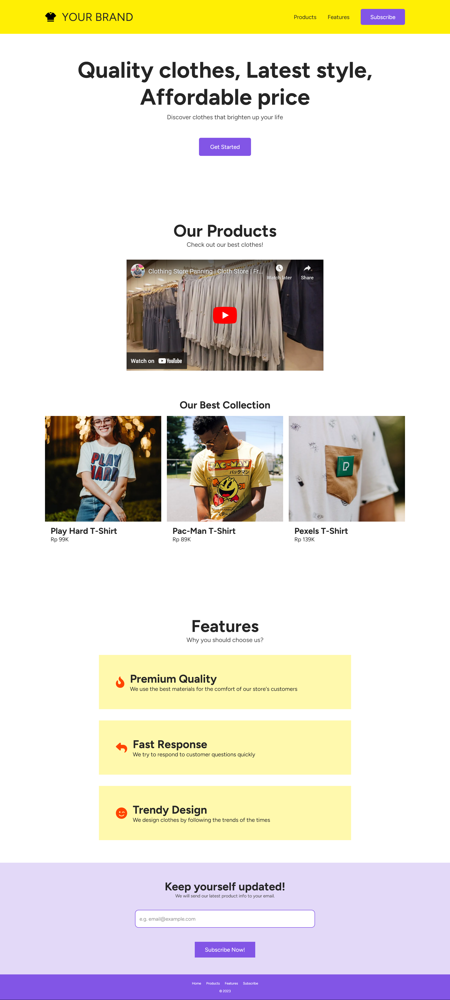
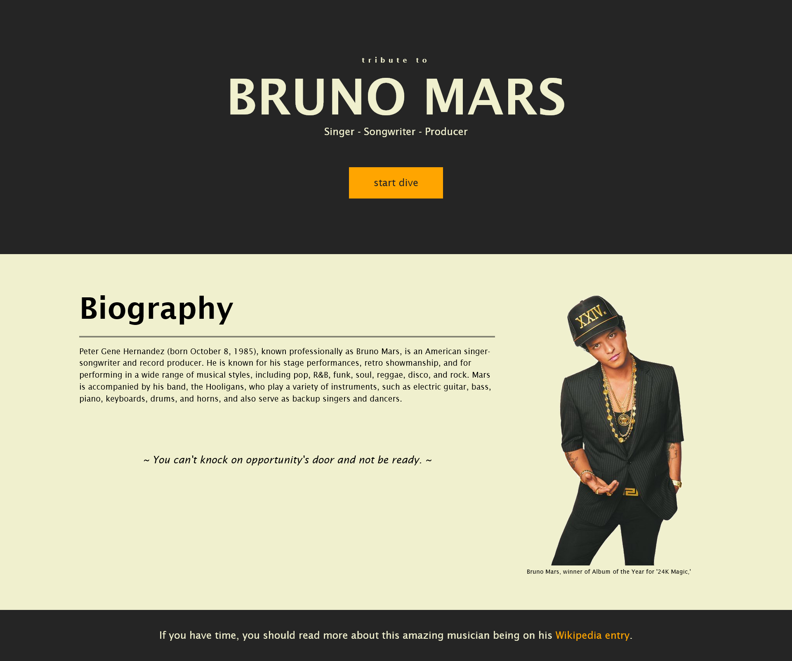
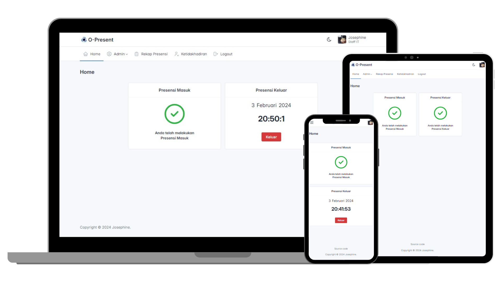
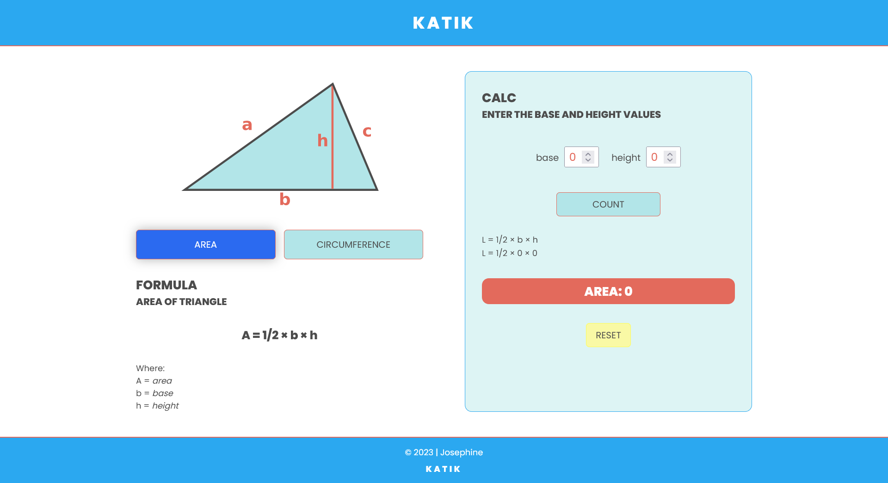

Static Web


Tribute Page
Bruno Mars Tribute website for Free Code Camp Certification needs.
Dynamic Web

O-Present
An open source application for web-based online presence needs, with GPS and selfie photo features.

Katik
A website to help with the process of calculating the area and perimeter of a triangle to fulfill the Mini Coding Project from RevoU.